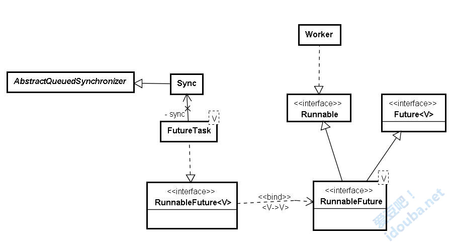
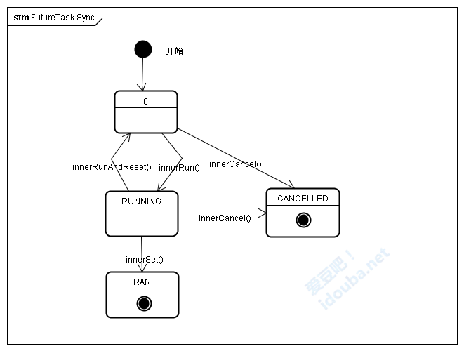
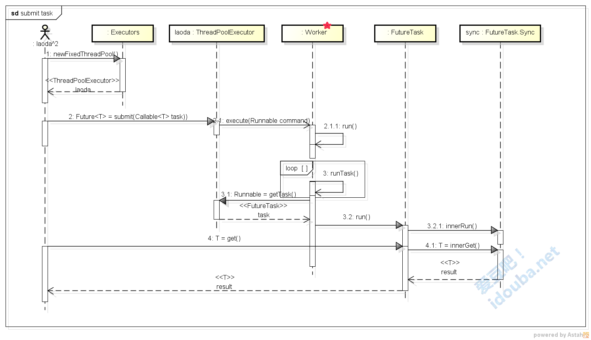

戏（细）说Executor框架线程池任务执行全过程（下）
归档下发表于infoq.com 2015年6月的两篇文章。本来是一篇文章，经过Infoq编辑Alice Ding建议，拆分为<上>和<下>两部分。谢谢Alice对文章的细心校对，帮我发下了其中的很多问题。添加下infoq要求的声明：本文为InfoQ中文站特供稿件，首发地址为：http://www.infoq.com/cn/articles/executor-framework-thread-pool-task-execution-part-02 。如需转载，请与InfoQ中文站联系。
内容综述
基于Executor接口中将任务提交和任务执行解耦的设计，ExecutorService和其各种功能强大的实现类提供了非常简便方式来提交任务并获取任务执行结果，封装了任务执行的全部过程。本文尝试通过对j.u.c.下该部分源码的解析以ThreadPoolExecutor为例来追踪任务提交、执行、获取执行结果的整个过程。为了避免陷入枯燥的源码解释，将该过程和过程中涉及的角色与我们工作中的场景和场景中涉及的角色进行映射，力图生动和深入浅出。
上一篇文章中通过引入的一个例子介绍了在Executor框架下，提交一个任务的过程，这个过程就像我们老大的老大要找个老大来执行一个任务那样简单。并通过剖析ExecutorService的一种经典实现ThreadPoolExecutor来分析接收任务的主要逻辑，发现ThreadPoolExecutor的工作思路和我们带项目的老大的工作思路完全一致。在本文中我们将继续后面的步骤，着重描述下任务执行的过程和任务执行结果获取的过程。会很容易发现，这个过程我们更加熟悉，因为正是每天我们工作的过程。除了ThreadPoolExecutor的内部类Worker外，对执行内容和执行结果封装的FutureTask的表现是这部分着重需要了解的。
为了连贯期间，内容的编号延续上篇。
2. 任务执行
其实应该说是任务被执行，任务是宾语。动宾结构：execute the task，执行任务，无论写成英文还是中文似乎都是这样。那么主语是是who呢？明显不是调用submit的那位（线程），那是哪位呢？上篇介绍ThreadPoolExecutor主要属性时提到其中有一个HashSet workers的集合，我们有说明这里存储的就是线程池的工作队列的集合，队列的对象是Worker类型的工作线程，是ThreadPoolExecutor的一个内部类，实现了Runnable接口：
private final class Worker implements Runnable
8)看作业线程干什么当然是看它的run方法在干什么。如我们所料，作业线程就是在一直调用getTask方法获取任务，然后调用 runTask(task)方法执行任务。看到没有，是在while循环里面，就是不干完不罢休的意思！在加班干活的苦逼的朋友们，有没有遇见战友的亲切感觉？
public void run() {
try {
Runnable task = firstTask;
//循环从线程池的任务队列获取任务
while (task != null || (task = getTask()) != null) {
//执行任务
runTask(task);
task = null;
}
} finally {
workerDone(this);
}
}
然后简单看下getTask和runTask(task)方法的内容。
- getTask方法是ThreadPoolExecutor提供给其内部类Worker的的方法。作用就是一个，从任务队列中取任务，源源不断地输出任务。有没有想到老大手里拿的总是满满当当的project，也是源源不断的。
Runnable getTask() {
for (;;) {
//从任务队列的头部取任务
r = workQueue.take();
return r;
}
}
- runTask(Runnable task)是工作线程Worker真正处理拿到的每个具体任务。看到这里才可用确认我们的猜想，之前提到的“执行任务”这个动宾结构前面的主语正是这些Worker呀。唠叨了半天（看主要方法都看到了整整第10个了），前面都是派活，这里才是干活。和我们的工作何其相似！老大（LD），老大的老大（LD^2），老大的老大（LD^n） 非常辛苦，花了很多时间、精力在会议室、在project上想着怎么生成和安排任务，然而真的轮到咱哥们干活，可能花了不少时间，但看看流程就是这么简单。三个大字：“Just do it”。
private void runTask(Runnable task) {
//调用任务的run方法，即在Worker线程中执行Task内定义内容。
task.run();
}
需要注意的地方出现了，调用的其实是task的run方法。看下FutureTask的run方法做了什么事情。
这里插入一个FutureTask的类图。可以看到FutureTask实现了RunnableFuture接口，所以FutureTask即有Runnable接口的run方法来定义任务内容，也有Future接口中定义的get、cancel等方法来控制任务执行和获取执行结果。Runnable接口自不用说，Future接口的伟大设计，就是使得实现该接口的对象可以阻塞线程直到任务执行完毕，也可以取消任务执行，检测任务是执行完毕还是被取消了。想想在之前我们使用Thread.join()或者Thread.join(long millis)等待任务结束是多么苦涩啊。
FutureTask内部定义了一个Sync的内部类，继承自AQS，来维护任务状态。关于AQS的设计思路，可以参照参考Doug Lea大师的原著The java.util.concurrent Synchronizer Framework。

- 和其他的同步工具类一样，FutureTask的主要工作内容也是委托给其定义的内部类Sync来完成。
public void run() {
//调用Sync的对应方法
sync.innerRun();
}
- FutureTask.Sync.innerRun()，这样做的目的就是为了维护任务执行的状态，只有当执行完后才能够获得任务执行结果。在该方法中，首先设置执行状态为RUNNING只有判断任务的状态是运行状态，才调用任务内封装的回调，并且在执行完成后设置回调的返回值到FutureTask的result变量上。在FutureTask中，innerRun等每个“写”方法都会首先修改状态位，在后续会看到innerGet等“读”方法会先判断状态，然后才能决定后续的操作是否可以继续。下图是FutureTask.Sync中几个重要状态的流转情况，和其他的同步工具类一样，状态位使用的也是父类AQS的state属性。

void innerRun() {
//通过对AQS的状态位state的判断来判断任务的状态是运行状态，则调用任务内封装的回调，并且设置回调的返回值
if (getState() == RUNNING)
innerSet(callable.call());
}
void innerSet(V v) {
for (;;) {
int s = getState();
//设置运行状态为完成，并且把回调额执行结果设置给result变量
if (compareAndSetState(s, RAN)) {
result = v;
releaseShared(0);
done();
return;
}
}
至此工作线程执行Task就结束了。提交的任务是由Worker工作线程执行，正是在该线程上调用Task中定义的任务内容，即封装的Callable回调，并设置执行结果。下面就是最重要的部分：调用者如何获取执行的结果。让你加班那么久，总得把成果交出来吧。老大在等，因为老大的老大在等！
3. 获取执行结果
前面说过，对于老大的老大这样的使用者来说，获取执行结果这个过程总是最容易的事情，只需调用FutureTask的get()方法即可。该方法是在Future接口中就定义的。get方法的作用就是等待执行结果。（Waits if necessary for the computation to complete, and then retrieves its result.）Future这个接口命名得真好，虽然是在未来，但是定义有一个get()方法，总是“可以掌控的未来，总是有收获的未来！”实现该接口的FutureTask也应该是这个意思，在未来要完成的任务，但是一样要有结果哦。
- FutureTask的get方法同样委托给Sync来执行。和该方法类似，还有一个V get(long timeout, TimeUnit unit)，可以配置超时时间。
public V get() throws InterruptedException, ExecutionException {
return sync.innerGet();
}
- 在Sync的 innerGet方法中，调用AQS父类定义的获取共享锁的方法acquireSharedInterruptibly来等待执行完成。如果执行完成了则可以继续执行后面的代码，返回result结果，否则如果还未完成，则阻塞线程等待执行完成。再大的老大要想获得结果也得等老子干完了才行！可以看到调用FutureTask的get方法，进而调用到该方法的一定是想要执行结果的线程，一般应该就是提交Task的线程，而这个任务的执行是在Worker的工作线程上，通过AQS来保证执行完毕才能获取执行结果。该方法中acquireSharedInterruptibly是AQS父类中定义的获取共享锁的方法，但是到底满足什么条件可以成功获取共享锁，这是Sync的tryAcquireShared方法内定义的。具体说来，innerIsDone用来判断是否执行完毕，如果执行完毕则向下执行，返回result即可；如果判断未完成，则调用AQS的doAcquireSharedInterruptibly来挂起当前线程，一直到满足条件。这种思路在其他的几种同步工具类Semaphore、CountDownLatch、ReentrantLock、ReentrantReadWriteLock也广泛使用。借助AQS框架，在获取锁时，先判断当前状态是否允许获取锁，若是允许则获取锁，否则获取不成功。获取不成功则会阻塞，进入阻塞队列。而释放锁时，一般会修改状态位，唤醒队列中的阻塞线程。每个同步工具类的自定义同步器都继承自AQS父类，是否可以获取锁根据同步类自身的功能要求覆盖AQS对应的try前缀方法，这些方法在AQS父类中都是只有定义没有内容。可以参照《源码剖析AQS在几个同步工具类中的使用》来详细了解。
突然想到想想那些被称为老大的，是不是整个career流程就是只干两件事情：submit a task， then wait and get the result。不对，还有一件事情，不是等待，而是催。“完了没，完了没？schedule很紧的，抓点紧啊，要不要适当加点班啊……”
V innerGet() throws InterruptedException, ExecutionException {
//获得锁，表示执行完毕，才能获得后执行结果，否则阻塞等待执行完成再获取执行结果
acquireSharedInterruptibly(0);
return result;
}
protected int tryAcquireShared(int ignore) {
return innerIsDone()? 1 : -1;
}
至此，获得执行结果，圆满完成任务！
老大的老大，拍着咱们老大的肩膀（或者深情的抚摸着咱们老大唏嘘胡茬的脸庞）说：“亲，你这活干的漂亮！”而隔壁桌座位的几个兄弟，刚熬了几个晚上加班交付完这波task后，发现任务队列里又有新任务了，俺们老大又从他的另外一个老大手里接来的任务了。每个人都按照这样的角色进行着，依照这样的角色安排和谐愉快地进行着。。。
| 角色名 | 任务用户 | 任务管理者 | 任务执行者 |
|---|---|---|---|
| 角色属性 | 任务的甲方 | 任务的乙方 | 乙方的工具 |
| 角色说明 | 选择合适的任务执行服务，如可以根据需要选择ThreadPoolExecutor还是ScheduledThreadPoolExecutor，并定制ExecutorService的配置。 定义好任务的工作内容和结果类型，提交任务，等待任务的执行结果 | 接收提交的任务； 维护执行服务内部管理； 配置工作线程执行任务 | 每个工作线程一直从任务执行服务获取待执行的任务，保证任务完成后返回执行结果。 |
| Executor****中对应 | 创建获取ExecutorService、并提交Task的外部接口 | ExecutorService的各种实现。如经典的ThreadPoolExecutor，ScheduledThreadPoolExecutor | 执行服务内定义的配套的Worker线程。如ThreadPoolExecutor.Worker |
| 主要接口方法 | submit(Callable task) | execute(Runnable command) | runTask(Runnable task) |
| 现实角色映射 | 手里有活的大老大 | 领人干活的老大 | 真正干活的码农 |
| 主要工作伪代码 | taskService = createService() future=taskService.submitTask() future.get() | executeTask() { addTask() createThread() } | while(ture) { getTask() runTask() } |
四、 总结
从时序图上看主要的几个角色是这样配合完成任务提交、任务执行、获取执行结果这几个步骤的。

- 外面需要提交任务的角色（如例子中老大的老大），首先创建一个任务执行服务ExecutorService，一般使用工具类Executors的若干个工厂方法 创建不同特征的线程池ThreadPoolExecutor，例子中是使用newFixedThreadPool方法创建有n个固定工作线程的线程池。
- 线程池是专门负责从外面接活的老大。把任务封装成一个FutureTask对象，并根据输入定义好要获得结果的类型，就可以submit任务了。
- 线程池就像我们团队里管人管项目的老大，各个都有一套娴熟、有效的办法来对付输入的任务和手下干活的兄弟一样，内部有一套比较完整、细致的任务管理办法，工作线程管理办法，以便应付输入的任务。这些逻辑全部在其execute方法中体现。
- 线程池接收输入的task，根据需要创建工作线程，启动工作线程来执行task。
- 工作线程在其run方法中一直循环，从线程池领取可以执行的task，调用task的run方法执行task内定义的任务。
- FutureTask的run方法中调用其内部类Sync的innerRun方法来执行封装的具体任务，并把任务的执行结果返回给FutureTask的result变量。
- 当提及任务的角色调用FutureTask的get方法获取执行结果时，Sync的innerGet方法被调用。根据任务的执行状态判断，任务执行完毕则返回执行结果；未执行完毕则等待。
还记得我们费了半天劲试图找出任务执行时那个动宾结构的主语吗？从示例上看更像是线程池在向外提供任务执行的服务。就像我们的老大在代表我们接收任务、执行任务、提交执行结果。明显我们这些真正的Worker成了延伸，有点搞不懂到底我们是主语，还是主语延伸的工具，就像定义ThreadPoolExecutor的内部类Worker一样。我们只是工具，不是主语，是状语： execute the task by workers。突然想到毛主席当年的“数风流人物，还看今朝”，说的应该是这些Worker的劳苦大众吧，怎么都今朝这么久了，俺们这些Woker们还是风流不起来呢？风骚的作者居然在上面严肃的时序图上加了个风骚的小星星，向同行的Worker们致敬！